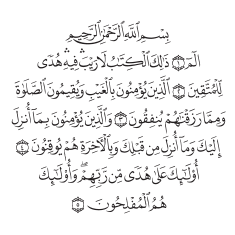

1What is being decided?
Whether Hifth should keep tinting a whole verse at a time, or start tinting the exact letter or mark a rule lands on — and if it should, whether to put that on the reader's screen now or only lay the groundwork for it.
Three answers, drawn side by side further down. A: leave it as it is, one colour a verse. B: colour the exact letter or mark. C: ship the measurements and the checks that keep them honest, and colour nothing yet.
2Why is this being asked now?
Because it finally got measured. Letting a reader pick out single words meant working out where every word — and every small mark the printer drew above and below the letters — actually sits on all 604 pages. That work is done and shipped for a different reason, and the moment it existed it was possible to count something nobody had counted before: how much of what we know about recitation rules never reaches the reader's eye. The number came back at 83.29%, and it is the reason this page exists rather than a hunch that verse-sized tinting felt coarse.
3What happens if nobody decides?
Nothing breaks, and that is worth saying plainly. Option A is what the app does today, it works, and no other part of Hifth is waiting behind this question — nothing is blocked, no release is held up, and this can sit open for a year at no cost to a reader.
What it costs is quieter. The measurements exist and nothing uses them, so nothing checks them: a positioning error would sit undetected until the day somebody builds on it. And 83.29% of what we know stays where it has always been, which is nowhere a reader can see.
4What does the app colour today?
A whole verse at a time. Below is page 2 exactly as Hifth draws it: five verses, five tinted shapes, each stepping across the line breaks the verse takes. When a verse carries several kinds of rule, Hifth picks the rarest one — telling you a verse hides a silent letter is worth more than telling you it has a madd, which nine verses in ten do.

| verse | kinds of rule present | rules | shown | on a printed mark | on a plain letter |
|---|---|---|---|---|---|
| 2:1 | madd lāzim | 2 | 2 | 0 | 2 |
| 2:2 | maddwaṣlidghām | 5 | 1 | 4 | 1 |
| 2:3 | maddwaṣlghunnahidghāmqalqalahsilent | 10 | 1 | 4 | 6 |
| 2:4 | maddwaṣlghunnahqalqalah | 9 | 1 | 1 | 7 +1 |
| 2:5 | maddwaṣlidghāmsilent | 8 | 2 | 4 | 4 |
5What is it leaving out?
Most of it. Across the whole mus'haf we have 60,057 rules marked up, and 50,023 of them — 83.29% — never reach the screen. Not because we are unsure where they are. Because there is only one colour to give and something else already took it.
| kinds | verses | share | |
|---|---|---|---|
| 1 | 369 | 5.98% | |
| 2 | 733 | 11.87% | |
| 3 | 1,197 | 19.39% | |
| 4 | 1,527 | 24.74% | |
| 5 | 1,531 | 24.80% | |
| 6 | 798 | 12.93% | |
| 7 | 18 | 0.29% |
The one that loses most is the one a reciter meets most. Madd appears in 92.48% of verses and gets the colour in 2.74% of them. That is deliberate — it ranks last because it is everywhere, which is the right call when you have one colour and the wrong one the moment you have room for two.
| kind | verses where it loses | share | wins | |
|---|---|---|---|---|
| madd | 5,540 | 89.75% | 2.74% | |
| waṣl | 4,471 | 72.43% | 4.50% | |
| ghunnah | 3,966 | 64.25% | 9.43% | |
| idghām | 2,726 | 44.16% | 20.98% | |
| qalqalah | 1,187 | 19.23% | 23.55% | |
| silent | 40 | 0.65% | 36.72% |
6Would colouring smaller pieces let us show more of it?
Yes — and that is the real prize, more than precision is. The problem today is not that a tint is coarse. It is that a tint is single: one shape per verse means one colour per verse, so 3.9 kinds compete for it and 2.9 lose every time. Tint the individual letters and marks instead and they stop competing — each one can carry its own colour, because each one is its own shape.
7What do printed mus'hafs already do about this?
They answered it the other way, decades ago, and they answered it at the letter. The colour-coded printed mus'haf — the one most huffaz have already held — tints individual letters, never whole verses.
In Dar al-Maarifah's colour-coded mus'haf a letter held longer is printed red, a nasalised letter green, a letter that is written but not pronounced grey, and the echoing letters blue; the publisher's claim is that a reader applies two dozen rules from the colours alone while their attention stays on the meaning. Whatever else is true, that is a working precedent for option B and none at all for option A: no printed tradition colours a whole verse to tell you something about one letter inside it, because on paper it never had to.
Why the precedent does not simply settle it
Print colours the ink of the letter itself. Hifth cannot: the page it shows is a picture of the printed page, one flat drawing, with no separate letter inside it to recolour. Everything on this page is a tinted shape laid over the print, which is a different visual language — a wash behind a letter reads less precisely than a letter that is simply a different colour, and no amount of accuracy in the positions changes that. So the printed mus'haf tells us readers cope with letter-level colour; it does not tell us that a letter-level wash reads the same way. Section 10 is where you judge that by eye.
What was and was not looked up. The printed colour-coded tradition above was checked against booksellers' descriptions of the Dar al-Maarifah edition (one, two). No survey was done of how other apps handle it: a search for any published account of a digital mus'haf's colouring turned up sales pages and PDFs of the printed editions, and nothing describing how a screen decides what to tint. Treat that as unlooked-at, not as evidence that nobody has solved it.
8What have we already decided that this has to live with?
Two earlier answers shape this one, and both of them make B cheaper and narrower than it sounds.
- “Should a reader be able to pick single words, or only whole verses?” — answered: single words.
- This is why the measurements exist at all; B is not proposing the expensive half, it is proposing to use it. It also sets a reader's expectation: the app already answers at word size when you touch it, so colour is now the one thing that still only speaks in verses.
- “Can a reader turn the colouring off, jump anywhere, and reopen it with no signal?” — answered: yes, it is a layer you can switch off.
- Anything chosen here is opt-in by construction — nobody is made to look at it — and the seven colours were fixed then. B does not get new colours. It gets smaller places to put the ones we have, which is exactly why section 10's complaint about the two quietest ones is a live one.
9What would each option look like on a real page?
The same three lines, three times. Same size, same colours — the only thing that changes is how small a piece the app is allowed to tint.
A · Leave it as it is
change nothing
What it takes
Nothing. No new work, no extra data for a phone to download.
What you get
The app stays exactly as it is now. We already have an internal tool that can show every mark, so nothing we learned is lost — it is just not on the reader's screen.
What it costs
83.29% of what we know stays invisible to a reader, indefinitely.
B · Colour the exact letter or mark
every rule gets its own colour
What it takes
About 5 KB more per page for a phone to download — roughly a tenth of what the page picture itself weighs. Size is not the sticking point.
What you get
Every kind of rule in the verse gets a colour instead of just one. On these three lines that is 34 rules shown rather than 7, and 13 of them sit on the exact mark the printer drew.
What it costs
Two visual languages on one line: a solid block on rules the printer drew a mark for, a tinted word for rules that land on a plain letter with nothing above it. Whether that reads as precise or as busy is what section 10 is for.
C · Prepare the ground, colour nothing yet
ship the measurements, not the look
What it takes
The same ~5 KB per page as B.
What you get
The positions get locked down and automatically checked before we commit to any look, so B can be tried, changed or abandoned later without redoing the measurement work.
What it costs
A reader sees option A. The faint outlines above are drawn only here, so you can see what would be available — the app itself would show nothing new.
10Where do A and B actually differ?
One word makes the whole argument. Four rules land on the sixth word of verse 2:3: a waṣl and a madd, which the printer drew small marks for, and an idghām and a silent, which land on plain letters with nothing above them to colour. Today all four come out as one grey tint over the entire verse. Here is that word at about eight times its real size.
This word also shows the two things still unsolved
Its idghām and its silent both land on plain letters of the same word — so B still has to choose between them. The competition does not disappear, it just moves from verse-sized to word-sized, and we currently only know how to settle it verse-sized. Second: the two colours B leans on hardest here are the faintest two we have. Look at the grey waṣl box against the grey word beneath it. Both colours were picked back when the smallest thing they could land on was a whole verse.
11What do the colours look like at the size they would be used?
#d55e00
wins 2.74%#9c9284
wins 4.50%#009e73
wins 9.43%#cc79a7
wins 20.98%#0072b2
wins 23.55%#6e6259
wins 36.72%#8e2400
wins 2.07%Colour is never the only signal — each kind also has its own dash pattern along the edge, so the seven stay distinguishable in greyscale, in print, and to a colour-blind reader.
12What else could we do, and why is it not on this page?
Three ideas were considered and left off. If one of them is the answer, this is the place to say so — an option list with no visible edge is asking you to trust that the edge was somewhere sensible.
- Recolour the letters themselves, the way the printed mus'haf does.
- Not possible with the page we ship. It is one flat drawing of the whole printed page; there is no separate letter in it to give a colour to. Doing this would mean redrawing the mus'haf, which is a far larger undertaking than any option here and a different decision entirely.
- Let the reader choose one kind of rule and show only that.
- Pick madd, see madd. This makes the competition disappear without measuring anything, and it would work at today's verse size. It is left off because it answers a different question — what do you want to see — where this page is about what the app shows by default. It is also the cheapest idea on this list, and it stays available whichever of A, B or C wins.
- Tint whole words, and never the printer's marks.
- Half of B: one visual language instead of two, and no need for the mark positions. Left off because it keeps the same competition B fails to fully solve — two rules on two letters of one word — while giving up the precision that was the reason to move at all. It is genuinely a middle option, and if section 10 reads as busy to you, it is the one to ask for.
13What would change the answer?
- The two quietest colours getting louder. B's weakest moment is a pale grey box on a pale grey word. That is a palette question, not a measurement one, and it can be tried on this very page in an afternoon. If it fixes it, B's main objection is gone.
- A hafiz looking at section 10 and calling it busy. One person reciting from the marked-up line would settle this faster and more honestly than any count on this page.
- Finding that two rules often land on the same letter, not just the same word. That is not counted here. If it turns out common, B needs a rule for what wins that we do not have, and C becomes the sensible order of work rather than a delay.
- The positions failing their check against the print. They are measured, not hand-placed, and they are checked — but on the day a check fails, B and C both stop until it passes, and A is unaffected.
14What is this page not settling?
Which colour each kind of rule gets — B reuses the seven that already exist. Whether a mark can be touched or asked about; this is only about colour. What should happen when two rules land on the exact same letter, which is not counted anywhere here. And nothing at all about where the rule data came from or how good it is: that is a separate question with its own record.
15So which one should we build?
Whether to build B. A is the status quo and needs no decision; C is B's groundwork without B's look, and is worth taking only if we think the look needs several tries.
The case for B is section 5: we already know where 60,057 rules are, and 83.29% of them are invisible for want of somewhere to put a second colour — and section 7, where the printed tradition has been colouring letters rather than verses for years. The case against is section 10: two of those colours are too quiet at this size, and one word can still carry two rules that want different colours in the same place. Neither is a reason not to build it — both are work that comes with it.